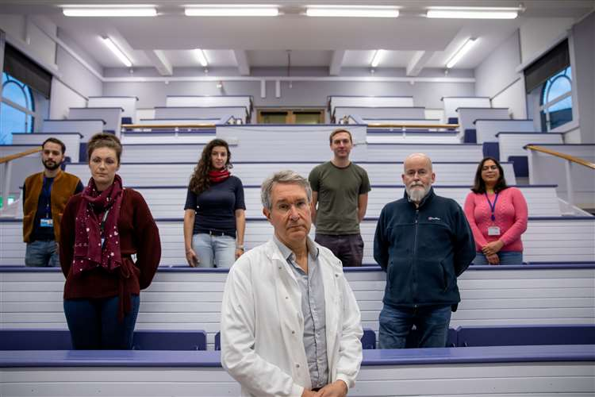
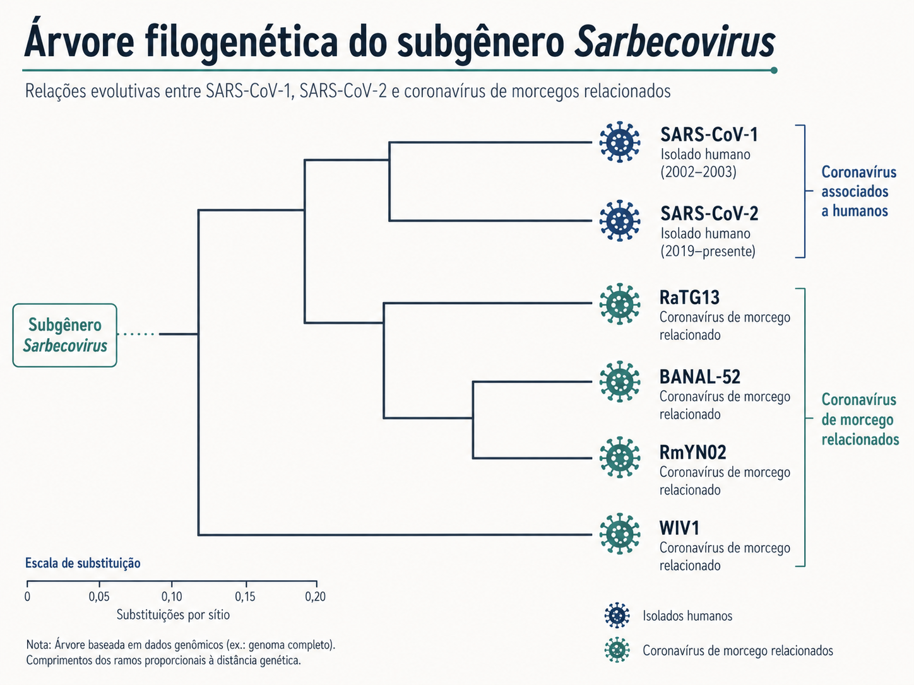
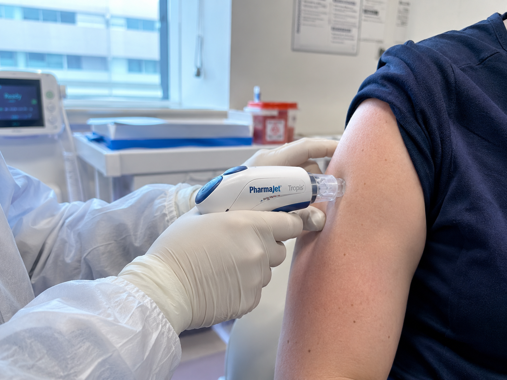
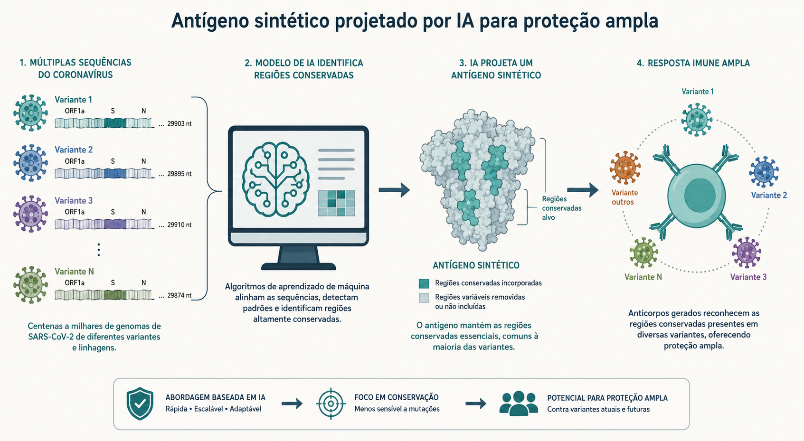

Munro A.P.S. et al. — Journal of Infection, 2026 [1] · ISRCTN87813400. Adaptado a partir da reportagem original: Romero, S., El Confidencial, 11/07/2026 [4].
A pergunta que os pesquisadores fizeram
Historicamente, a vacinologia reage: um vírus novo surge, causa uma epidemia, e só então uma vacina é desenhada especificamente contra ele. Foi assim com o SARS-CoV-2 em 2020. A pergunta deste estudo foi diferente: é possível desenhar, hoje, uma vacina que proteja contra vírus que ainda nem apareceram em humanos? [2]
A equipe da Universidade de Cambridge e da empresa derivada (spin-out) DIOSynVax, fundada em 2017 com apoio da Cambridge Enterprise [2], mirou um alvo específico: os sarbecovírus, subgênero de coronavírus que inclui o SARS-CoV-1 (2003), o SARS-CoV-2 (causador da covid-19) e diversos coronavírus de morcego já identificados por programas de vigilância genômica, mas que ainda não infectam humanos [1].


Antes de continuar
Se a IA "já sabe" quais traços genéticos os sarbecovírus compartilham, por que ainda seria necessário testar essa vacina em animais e depois em humanos, em vez de distribuí-la diretamente? O que exatamente uma simulação computacional não consegue prever sozinha?
O que eles fizeram: da simulação computacional ao braço do voluntário
Em vez de partir de uma cepa viral já conhecida, a equipe alimentou um sistema de aprendizado de máquina com todas as sequências genéticas de sarbecovírus disponíveis, coletadas por redes de vigilância viral ao redor do mundo [2]. O algoritmo comparou essas sequências e identificou quais regiões se repetem em toda a família viral — os chamados epítopos conservados, concentrados sobretudo no domínio de ligação ao receptor (RBD) da proteína spike [1].
A partir disso, os cientistas desenharam um antígeno sintético batizado pEVAC-PS (tecnologia DIOSynVax), formulado como vacina de DNA plasmidial [1]. A escolha do DNA não é incidental: ela confere termoestabilidade ao produto, dispensando parte da cadeia de frio — um ponto relevante para países com infraestrutura logística limitada [1].
Por que isso importa para você?
Quando um paciente perguntar "essa vacina de IA já existe, por que ainda não tomo ela?", você vai entender que há uma diferença enorme entre prova de conceito segura em Fase I e vacina pronta para uso público. Saber explicar essa distinção com precisão — sem alarmismo nem promessas exageradas — é parte do seu papel na comunicação de risco em saúde.
Desenho do estudo
Trata-se de um ensaio clínico Fase I, aberto (open-label), de escalonamento de dose, sem grupo placebo. Entre dezembro de 2021 e setembro de 2023, 39 voluntários saudáveis, entre 18 e 50 anos — todos já com 2 ou 3 doses prévias de vacina contra covid-19 —, foram recrutados sequencialmente no centro de pesquisa clínica do NIHR em Southampton e, a partir de abril de 2023, também no NIHR de Cambridge (Addenbrooke's Hospital) [1].
Cada participante recebeu duas doses (no dia 0 e no dia 28), em um de quatro níveis crescentes: 0,2 mg, 0,4 mg, 0,8 mg ou 1,2 mg. A aplicação foi feita por via intradérmica sem agulha, usando o dispositivo a jato PharmaJet Tropis — um microjato de fluido que atravessa a pele [1].

Imagine desenhar um retrato-falado que não copia o rosto de uma única pessoa, mas captura os traços que várias pessoas de uma mesma família têm em comum — o formato do nariz, a distância entre os olhos. Com esse retrato, você reconheceria qualquer parente daquela família, mesmo um que nunca tivesse visto antes. É essencialmente isso que o algoritmo fez com a "família" dos sarbecovírus: identificou os traços genéticos compartilhados para treinar o sistema imune a reconhecer qualquer membro dela.
Antes de continuar
O estudo escolheu recrutar voluntários que já tinham tomado 2 ou 3 doses de vacina contra covid-19. Se você estivesse desenhando este protocolo, veria alguma vantagem prática nessa escolha — mesmo sabendo que ela dificultaria medir o efeito da nova vacina? Pense em questões éticas e logísticas de um ensaio Fase I.
O que descobriram
Os desfechos primários deste tipo de estudo Fase I são segurança e reatogenicidade — não eficácia clínica. Nesse quesito, os resultados foram consistentes: a vacina foi bem tolerada em todos os quatro níveis de dose, sem eventos adversos graves relacionados, sem sinal de piora dos efeitos colaterais com o aumento da dose, e com menos reações solicitadas após a segunda aplicação [1].
Como desfecho secundário, a equipe avaliou a imunogenicidade humoral no dia 56 (28 dias após a segunda dose), medindo anticorpos contra o RBD do SARS-CoV-1, do SARS-CoV-2 e do próprio antígeno vacinal (PanSarbeco RBD). Os voluntários desenvolveram anticorpos direcionados a regiões conservadas entre os sarbecovírus — incluindo uma região que corresponde ao sítio reconhecido pelo anticorpo monoclonal amplamente neutralizante S309 [1]. Isso é exatamente o que o desenho computacional da vacina pretendia provocar [3].
Ainda assim, os próprios autores classificam a resposta imune como modesta [1] — um resultado importante para o estudante interpretar com cautela, sem inflar a conclusão.
Antes de continuar
A vacina gerou anticorpos contra uma região reconhecida pelo S309 — um anticorpo já usado na clínica. Isso, por si só, garante que a vacina vai proteger contra infecção? Que outro tipo de dado (além de nível de anticorpos) você pediria antes de afirmar que há proteção real?
Glossário interativo
Clique em cada termo para expandir a explicação.
Sarbecovírus
Em outras palavras: é o "sobrenome de família" de um grupo de coronavírus que inclui o SARS-CoV-1, o SARS-CoV-2 e vários coronavírus encontrados em morcegos.
Exemplo clínico: quando você lê "vigilância de sarbecovírus em morcegos", entenda: monitoramento de vírus parentes do SARS-CoV-2 que ainda podem sofrer spillover (salto) para humanos.
"Superantígeno" (termo jornalístico) ⚠️
Em outras palavras: nas reportagens, "superantígeno" é usado para descrever um antígeno sintético otimizado por computador para cobrir características comuns de toda uma família viral.
Domínio de ligação ao receptor (RBD)
Em outras palavras: é a "chave" na superfície do vírus (parte da proteína spike) que encaixa no receptor da célula humana (ACE2) para permitir a infecção.
Exemplo clínico: a maioria das vacinas contra covid-19 e os anticorpos monoclonais terapêuticos miram justamente essa região.
Epítopo conservado
Em outras palavras: é a parte do vírus que muda pouco entre variantes e entre espécies diferentes da mesma família — por isso é um alvo mais "estável" para o sistema imune.
Vacina de DNA plasmidial
Em outras palavras: em vez de injetar a proteína viral pronta ou um mRNA, injeta-se um pequeno círculo de DNA (plasmídeo) com as instruções para a própria célula produzir o antígeno.
Exemplo clínico: vantagem prática: costuma ser mais estável em temperatura ambiente do que vacinas de mRNA, facilitando o transporte em locais sem boa cadeia de frio.
Administração intradérmica sem agulha (jet injector)
Em outras palavras: um dispositivo dispara um microjato de líquido sob pressão que atravessa a pele, entregando a vacina na derme sem perfurar com agulha.
Exemplo clínico: reduz o medo de agulha e o descarte de material perfurocortante — relevante para campanhas de vacinação em massa.
Imunogenicidade
Em outras palavras: é a capacidade de uma vacina de provocar uma resposta do sistema imunológico (produção de anticorpos, ativação de células T), medida em laboratório.
Importante: imunogenicidade não é o mesmo que eficácia clínica — provar que o corpo reage não é o mesmo que provar que a pessoa fica protegida contra a doença.
Reatogenicidade
Em outras palavras: conjunto de reações esperadas e observáveis logo após a vacinação — dor no local, febre, mal-estar — monitoradas ativamente (solicitadas) por um período definido (aqui, 7 dias).
Viés de imunidade prévia (imprinting)
Em outras palavras: quando os voluntários já chegam ao estudo com defesas altas — por vacinação anterior ou infecção natural —, fica mais difícil medir quanto exatamente a nova vacina experimental está acrescentando.
Exemplo clínico: foi exatamente o que aconteceu neste ensaio, conduzido durante ondas de infecção por Ômicron.
Anticorpo neutralizante de amplo espectro (ex.: S309)
Em outras palavras: um anticorpo monoclonal capaz de reconhecer e neutralizar múltiplas variantes ou espécies virais relacionadas, por mirar uma região conservada.
Exemplo clínico: o S309 deu origem ao anticorpo terapêutico sotrovimabe, usado contra covid-19.
Zoonose / spillover
Em outras palavras: o salto de um patógeno de uma espécie animal para humanos — foi assim que o SARS-CoV-2 provavelmente surgiu.
Ensaio clínico Fase I, aberto, com escalonamento de dose
Em outras palavras: primeira etapa de testes em humanos, sem grupo placebo (todos sabem o que estão recebendo), em que a dose aumenta gradualmente entre grupos para avaliar segurança antes de tudo.
Limitações do estudo
Amostra pequena e desenho sem controle: 39 voluntários, ensaio aberto, sem grupo placebo — adequado para avaliar segurança, mas insuficiente para provar eficácia clínica [1].
Imunidade prévia heterogênea: o recrutamento ocorreu durante ondas de Ômicron, com voluntários já vacinados; isso introduziu viés difícil de controlar e pode ter mascarado o real potencial imunogênico do antígeno [1].
Viés metodológico na leitura dos anticorpos: a técnica de microarray de peptídeos usada detecta principalmente epítopos lineares, podendo subestimar respostas contra epítopos conformacionais — potencialmente relevantes para neutralização real [1].
Resultado de imunogenicidade "modesto": os próprios autores reconhecem que os dados ainda não sustentam atividade neutralizante ampla e robusta — este é um estudo de viabilidade, não de eficácia [1], [5].
Antes de continuar
Sabendo dessas limitações, como você responderia a um colega que dissesse "essa vacina de IA já é mais eficaz que as vacinas tradicionais"? O que, exatamente, nos dados apresentados sustenta — e o que não sustenta — essa afirmação?
Quiz de fixação
Linha do tempo do estudo
Início do recrutamento no NIHR Southampton Clinical Research Facility.
Escalonamento sequencial de dose: 0,2 → 0,4 → 0,8 → 1,2 mg, aplicadas nos dias 0 e 28 de cada voluntário.
Ampliação do recrutamento para o NIHR Cambridge CRF (Addenbrooke's Hospital).
Encerramento da vacinação — total de 39 voluntários incluídos.
Avaliação do desfecho primário de imunogenicidade (28 dias após a 2ª dose).
Publicação no Journal of Infection e anúncio de Fase 2 planejada.
Resumo visual
A vacina faz parte de um pipeline mais amplo da DIOSynVax, que já desenvolve candidatos semelhantes para gripe sazonal e pandêmica (H5N1) e para vírus hemorrágicos do grupo Ebola, com financiamento predominante da Innovate UK [2].

Para se aprofundar
- [1] Munro A.P.S. et al. A phase I, needle free, dose escalation clinical trial of pEVAC-PS, a candidate pan-Sarbecovirus vaccine. Journal of Infection, 2026. DOI: 10.1016/j.jinf.2026.106759 · Registro: ISRCTN87813400. Artigo primário, fonte de todos os dados de metodologia e resultados citados.
- [2] University of Cambridge / EurekAlert. New 'universal vaccine' technology could protect us from future virus outbreaks. eurekalert.org
- [3] NIHR Cambridge Clinical Research Facility. New 'universal vaccine' technology could protect from future virus outbreaks. cambridgecrf.nihr.ac.uk
- [4] Romero, S. Una vacuna creada por inteligencia artificial abre la puerta a prevenir futuras pandemias. El Confidencial, 11/07/2026. elconfidencial.com. Reportagem original que motivou este material.
- [5] pharmaphorum. First human trial backs AI-designed 'universal' vaccine. pharmaphorum.com